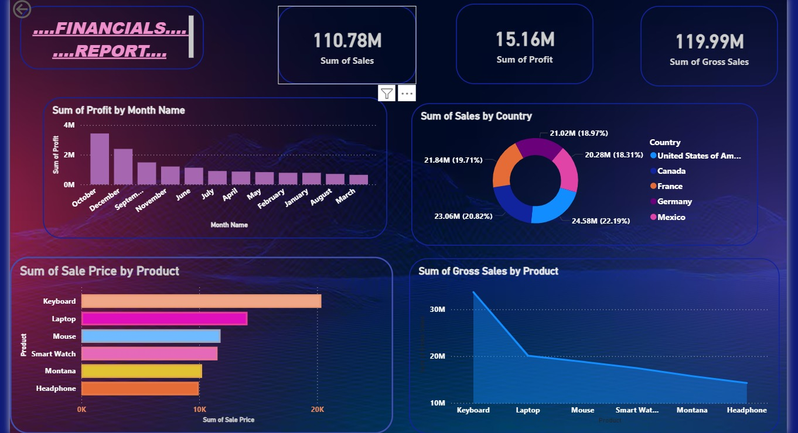

01Global Sales & Revenue Performance Dashboard
Analyzed multi-region sales transactions to track revenue growth, profit margins, and regional category performance across product lines.
SQL
Power BI
Excel
Key Insight:
Top 18% of SKUs generated 64% of gross profit while low-margin bulk discounts eroded Q3 net margin by 4.2%.